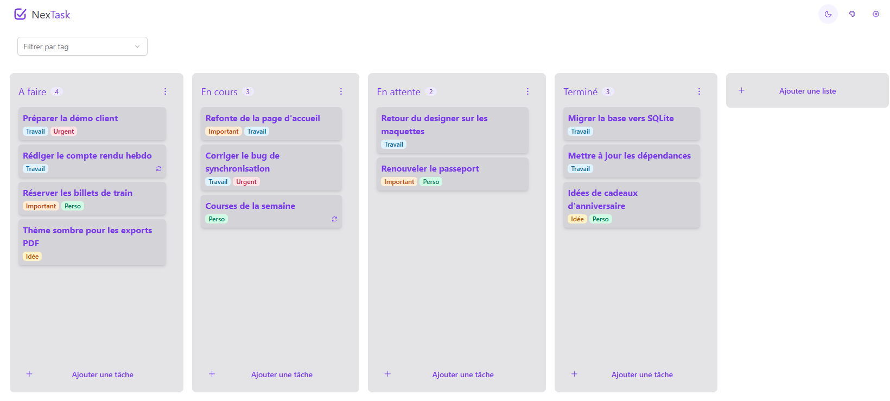
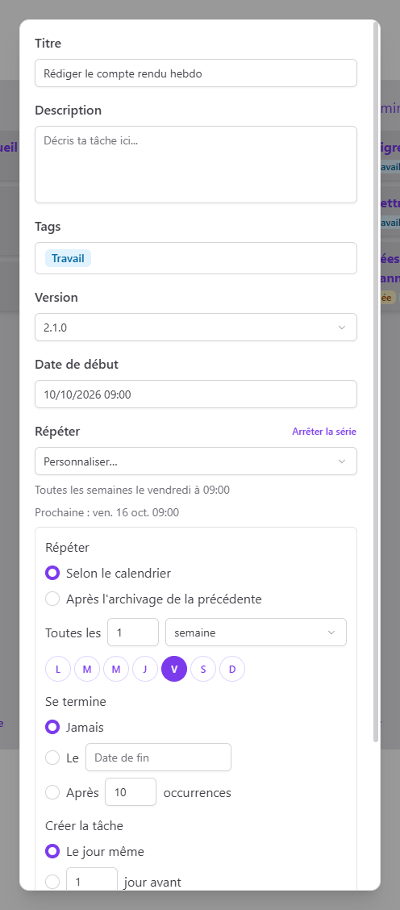

Kanban board
Name your own columns and drag tasks and columns around until the board matches how you work.
NexTask is a fast, offline task manager. Organize your work on a Kanban board, capture ideas from anywhere with a shortcut and let recurring tasks show up on their own. No account, no cloud.

Built for people who want to see their work at a glance and get back to it.
Name your own columns and drag tasks and columns around until the board matches how you work.
Press Ctrl Alt N in any app to capture a task, even when NexTask is hidden.
Daily, weekly, monthly or yearly, on given weekdays or the last day of the month. Pause a series any time.
Give a task a start date and get a native desktop notification when it's time.
Color-coded tags to filter the board, and versions to group tasks by release or milestone.
Light, dark or system theme, your own accent color and an adjustable interface size.
Recurring tasks come back on schedule, or only once you've archived the previous one. You decide.

Everything lives in a local SQLite database. NexTask works without an internet connection and sends no data anywhere.
Download NexTask for free and set up your board in a minute.
The interface is currently in French, English is on the way. macOS and Linux builds can be produced from the source code.